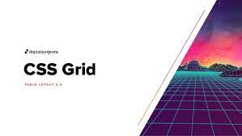

Propósito del sitio
El propósito de este sitio es el de ayudar con la educación virtual ya que por medio de este se manejarán
temáticas de estudio para poder profundizar en los
temas de Flex Box, CSS Grid, en HTML, de esta forma los estudiantes podrán acceder a la información desde
sus computadores, tabletas o celulares,
para así poder estar al día con las actividades que se solicite por aparte del docente.
Flex Box

Flex box se creó para ayudar a los diseñadores a distribuir de una forma ordenada la interfaz gráfica de
un sitio web y como encontramos en la página de mozilla “fue diseñado para permitir ayudar a distribuir
el espacio entre los ítems de una interfaz y mejorar las capacidades de alineación. Cuando describimos a
flexbox como unidimensional destacamos el hecho que flexbox maneja el layout en una sola dimensión a la
vez — ya sea como fila o como columna. Esto contrasta con el modelo bidimensional del Grid Layout de
CSS, el cual controla columnas y filas a la vez.” (Docs,
2021).
Este módulo tiene como fundamento dos ejes el eje principal y el eje cruzado. Tomando como referencia
“El eje principal está definido por la propiedad flex-direction, y el eje cruzado es perpendicular a
este.” (Docs,
2021).
CSS Grid

Este es un módulo con el cual podemos realizar diseños de sitios web variados ya que “También se destaca
por permitir dividir una página en áreas o regiones principales, por definir la relación en términos de
tamaño, posición y capas entre partes de un control construido a partir de primitivas HTML.” (Web Docs,2021).
Este tipo de diseño se pueden organizar por filas y columnas, las cuales pueden ser de tamaño variables
y que permiten distribuir de manera organizada y eficiente los componentes dentro de la página web.